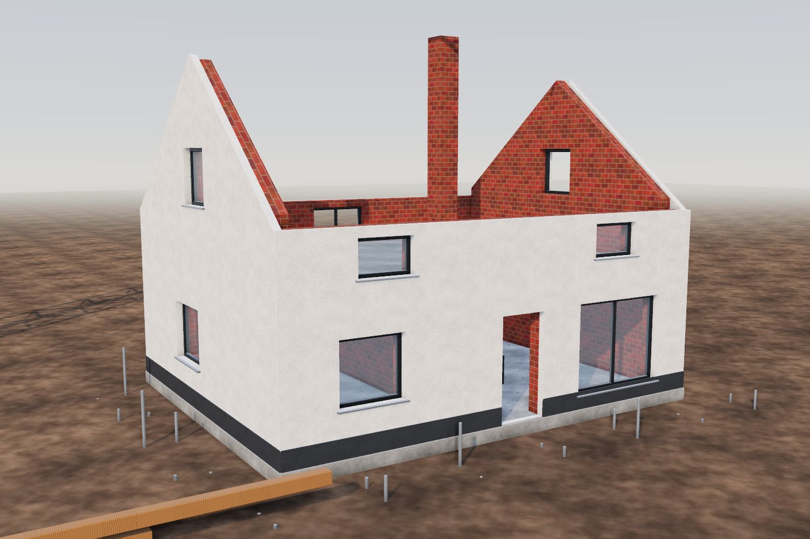
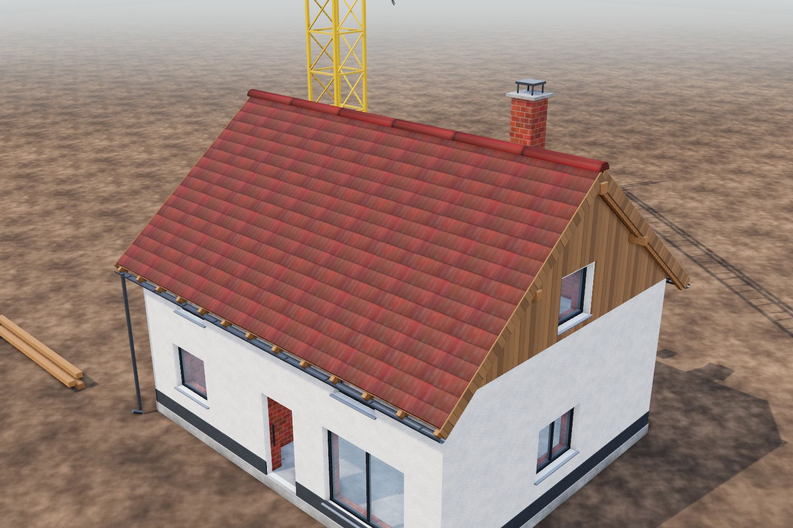
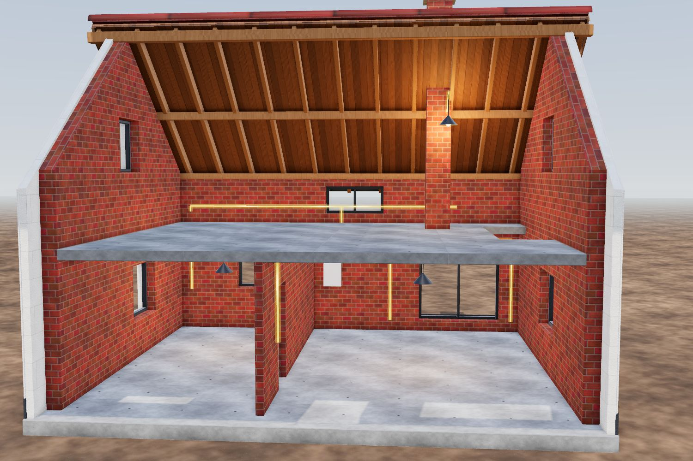
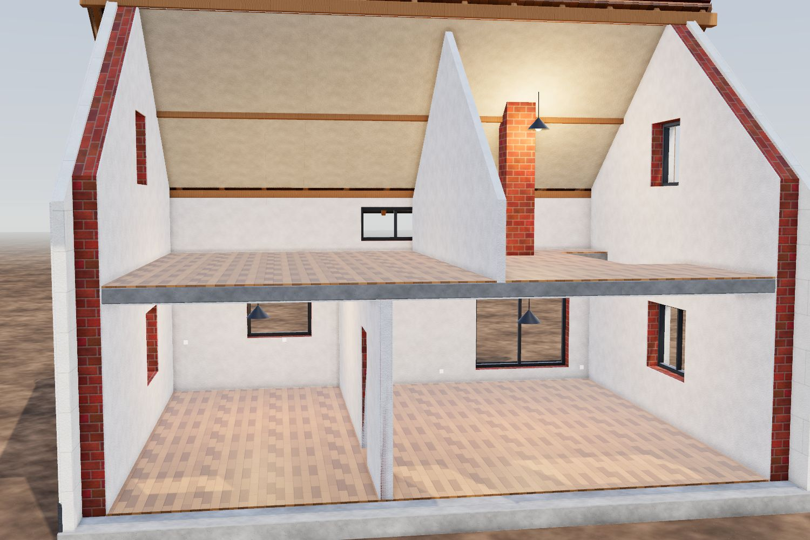
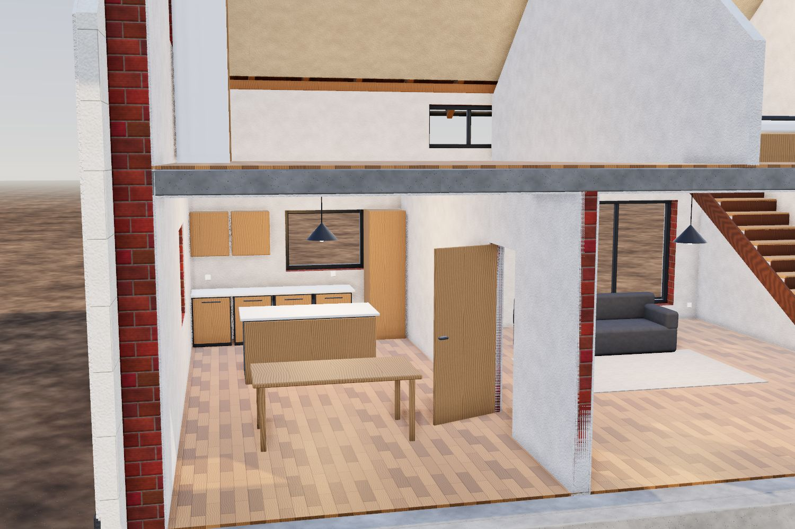
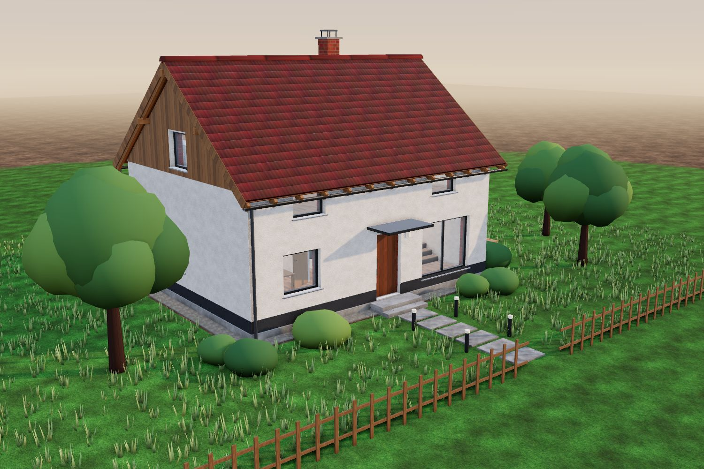
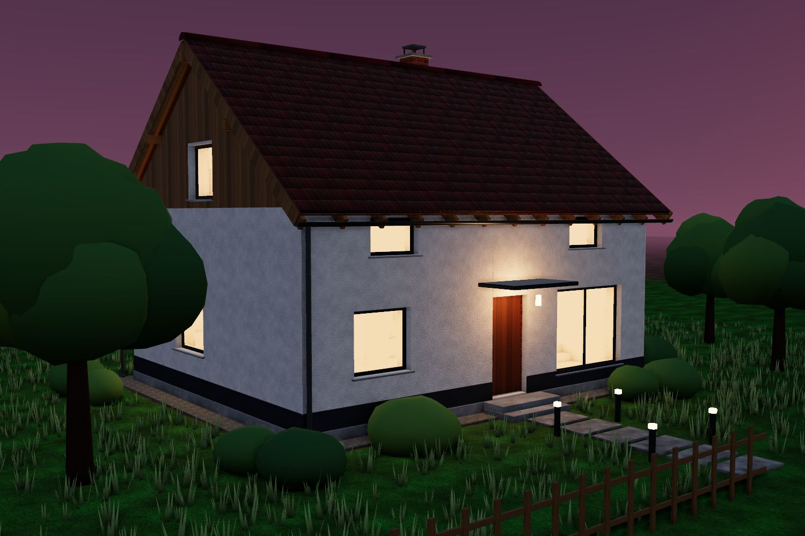

01 Etappe 1 von 8 · Fundament, Bodenplatte, Mauern
Rohbau
Zuerst wird das Fundament betoniert und die Bodenplatte gegossen. Dann ziehen unsere Maurer Lage für Lage die Backsteinwände hoch – millimetergenau nach Plan.
Wir schauen ins Haus: Vom Verteilkasten aus werden Leitungen zu Steckdosen, Schaltern und Lampen gezogen. Dann der Moment, auf den alle warten – das Licht geht an.
01 Etappe 1 von 8 · Fundament, Bodenplatte, Mauern
Rohbau
Zuerst wird das Fundament betoniert und die Bodenplatte gegossen. Dann ziehen unsere Maurer Lage für Lage die Backsteinwände hoch – millimetergenau nach Plan.
Fundament & Bodenplatte in Beton
Backsteinmauerwerk, Lage für Lage
Geschossdecke über dem Erdgeschoss

02 Etappe 2 von 8 · Dämmung, Verputz, Farbe, Fenster
Fassade
Die Aussenwände erhalten eine Wärmedämmung, darüber Grund- und Deckputz und einen hellen Anstrich. Dann werden die Fenster mit Fensterbänken versetzt.
14 cm Aussenwärmedämmung
Verputz & Anstrich, Sockel in Anthrazit
Fenster und Fensterbänke

03 Etappe 3 von 8 · Dachstuhl aus Holz, Ziegel
Zimmermann
Pfetten und Sparren kommen fixfertig abgebunden aus unserer Zimmerei. Der Dachstuhl steht in einem Tag – dann decken wir das Dach mit Tonziegeln.
Firstpfette, Fusspfetten, Sparren
Schalung, Ziegel, Firstziegel
Dachrinnen & Holzschalung der Giebel

04 Etappe 4 von 8 · Leitungen, Verteilung, Licht
Elektrik
Wir schauen ins Haus: Vom Verteilkasten aus werden Leitungen zu Steckdosen, Schaltern und Lampen gezogen. Dann der Moment, auf den alle warten – das Licht geht an.
Unterverteilung mit Sicherungen
Leitungen zu Dosen und Schaltern
Lampen gehen an

05 Etappe 5 von 8 · Verputz, Farbe, Böden
Innenausbau & Maler
Innenputz deckt die Leitungen zu. Die Maler streichen Wände und Decken, danach wird das Eichenparkett verlegt – Raum für Raum.
Innenputz & Trennwände
Anstrich mit emissionsarmen Farben
Eichenparkett in beiden Geschossen

06 Etappe 6 von 8 · Küche, Schränke, Türen
Schreiner
Massarbeit aus unserer Werkstatt: Die Küche mit Kochinsel, der Hochschrank, die Eichentreppe, Innentüren, Einbauschrank und die Haustür.
Küche & Kochinsel nach Mass
Eichentreppe & Innentüren
Einbauschrank & Haustür

07 Etappe 7 von 8 · Rasen, Weg, Bäume, Zaun
Garten & Umgebung
Das Haus kommt in seiner Umgebung an: Rasen statt Erde, ein Plattenweg zur Haustür, eine Holzterrasse, Bäume, Hecken und ein Holzzaun.
Rasen & Kiesstreifen
Plattenweg & Holzterrasse
Bäume, Sträucher, Holzzaun

08 Etappe 8 von 8 · Willkommen zu Hause
Fertiges Haus
Abendstimmung, Licht in den Fenstern, die Gartenleuchten gehen an. Wir übergeben Ihnen die Schlüssel – und bleiben auch nach dem Einzug für Sie da.
Bei uns koordiniert eine Bauleiterin alle Gewerke. Sie wissen jederzeit, wer wann auf der Baustelle ist – und Sie erhalten eine einzige, verständliche Offerte.
Fixe Termine dank eigenem Personal
Kurze Wege zwischen Maurer, Elektriker und Schreiner